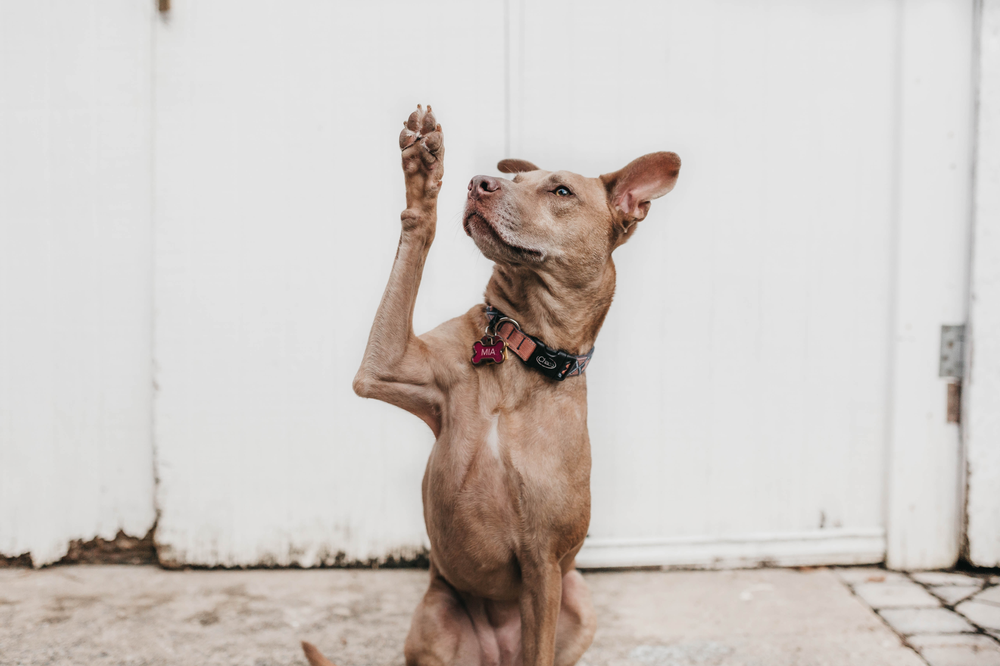
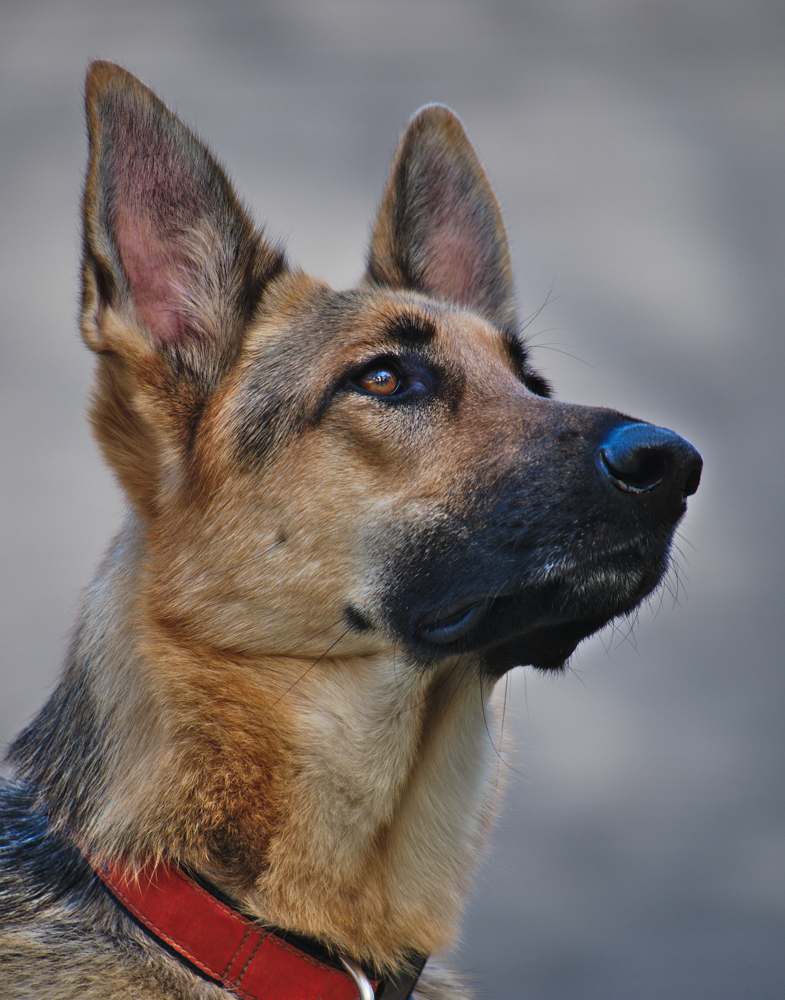

Welcome to PetAdoptConnect - Where Compassion Finds a Home
At PetAdoptConnect, we believe that every pawprint has a story, and every stray pet deserves a second chance at a loving home. Nestled in the heart of [Your Location], we are more than just a pet shelter; we are a sanctuary for hope and a hub of compassion for our furry, feathered, and scaled friends.
Our mission is simple yet profound: to rescue, rehabilitate, and rehome animals in need, regardless of their size, breed, age, or circumstance. From the abandoned kitten shivering in the cold to the aging dog whose family could no longer care for them, we open our doors wide to all, providing them with a refuge from the harsh realities of life on the streets.
Every wagging tail, every gentle purr, every hopeful gaze tells a tale of resilience and the enduring spirit of our four-legged companions. We are dedicated to being their voice and their beacon of hope, ensuring that they no longer roam alone but instead find their way into the hearts and homes of loving families.
Our commitment extends beyond rescue. We offer these animals not just shelter, but also expert care, a warm place to heal, and a chance to rediscover the joy of companionship. We believe that every pet, regardless of their past, has the potential to become a cherished member of a family.
As you navigate through our website, you'll discover heartwarming stories of transformation, profiles of pets in search of their forever homes, and ways you can become a part of this beautiful journey. Whether you're looking to adopt, volunteer, donate, or simply learn more about our cause, you are joining a community of animal lovers who are making a difference, one furry friend at a time.
Thank you for visiting PetAdoptConnect. Together, we are rewriting the stories of countless pets, providing them with the love, care, and family they deserve. Join us in our mission to turn the page on their past and write a brighter, happier future. Because, at [Your Shelter Name], we believe that every pet deserves a place to call home.
Welcome to our sanctuary of hope.

James the Thai Ridgeback:
James, the majestic Thai Ridgeback, was left at the shelter when his owner relocated. He is highly intelligent and quick to learn, making him an ideal companion for an active family seeking a loyal and devoted four-legged friend.

Julia the Afghan Hound:
Julia, the graceful Afghan Hound, retired from a life of racing and is now in search of a tranquil and loving home to enjoy her golden years. She exudes elegance and enjoys leisurely walks and lounging in comfort.

Michael the German Shepherd:
Michael, the vigilant German Shepherd, was surrendered by his previous owner who couldn't provide him the attention he deserved. Michael is a confident and protective companion who takes his role as a loyal guardian seriously.

Milli the Beagle:
Milli, the clever and curious Beagle, was found as a stray but quickly captured the hearts of shelter staff with her playful antics and soulful eyes. She's a bundle of joy who thrives on adventure and exploring her surroundings.
Roberta the American Eskimo:
Roberta, the fluffy and charming American Eskimo, was left behind by her previous owner. Her snowy white coat and friendly disposition make her an enchanting addition to any family. She's a loyal lap dog who adores attention.

Victor the Staffordshire Bull Terrier:
Victor, the courageous Staffordshire Bull Terrier, ended up at the shelter after his family had to move. He's a strong and affectionate dog who loves to play and cuddle, making him an excellent choice for an active family seeking a devoted companion.